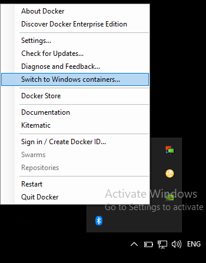

Is it possible to run Windows containers on Linux? The scenario is based on an
application written in .NET (old net) and the Linux user that wants to
run this with Docker needs to provide a net462 written API on the
localhost.
I am using the beta version of Docker Desktop for Windows.
If no, then why can Windows run Linux containers and not vice-versa?
As some time has passed and this question is a popular one, I'd like to add
one note here that the workaround is to use the new .NET Standard. It allowed
me to pack the 4.6.2 framework into a new library.
Answer
TL;DR:
Q: Can Windows containers run on Linux?
A: No. They cannot.
Containers are using the underlying operating system resources and drivers, so
Windows containers can run on Windows only, and Linux containers can run on
Linux only.
Q: But what about Docker for Windows? Or other VM-based solutions?
A: Docker for Windows allows you to simulate running Linux
containers on Windows , but under the hood a Linux VM is created, so
still Linux containers are running on Linux, and Windows containers are
running on Windows.
Bonus: Read this very nice article about running Linux docker containers on
Windows.
Q: So, what should I do with a .NET Framework 462 application, if I would
like to run in a container?
A: It depends. Consider the following recommendations:
-
If it is possible, move to .NET Core. Since .NET Core brings support to most major features of .NET Framework, and .NET Framework 4.8 will be the last version of .NET framework
-
If you cannot migrate to .NET Core - As @Sebastian mentioned - you can convert your libraries to .NET Standard, and have two versions of the application - one on .NET Framework 4.6.2, and one on .NET Core - it is not always obvious. Visual Studio supports it pretty well (with multi-targeting), but some dependencies can require extra care.
-
(Less recommended) In some cases, you can run Windows containers. Windows containers are becoming more and more mature, with better support in platforms like Kubernetes. But to be able to run .NET Framework code, you still need to run on base image of "Server Core", which occupies about 1.4 GB. In same rare cases, you can migrate your code to .NET Core, but still run on Windows Nano server, with an image size of 95 MB.
Leaving also the old updates for history
Update 2: 08.2018
If you are using Docker-for-Windows, you can run now both Windows and Linux
containers simultaneously : Running Docker Windows and Linux Containers
Simultaneously
Bonus: Not directly related to the question, but you can now run not only
the Linux container itself, but also an orchestrator like Kubernetes:
Kubernetes is Now Available In Docker Desktop Stable Channel
Updated at 2018:
Original answer in general is right, BUT several months ago, Docker added
experimental feature LCOW (official GitHub repository).
From this post:
Doesn’t Docker for Windows already run Linux containers? That’s right.
Docker for Windows can run Linux or Windows containers, with support for
Linux containers via a Hyper-V Moby Linux VM (as of Docker for Windows 17.10
this VM is based on LinuxKit).
The setup for running Linux containers with LCOW is a lot simpler than the
previous architecture where a Hyper-V Linux VM runs a Linux Docker daemon,
along with all your containers. With LCOW, the Docker daemon runs as a
Windows process (same as when running Docker Windows containers), and every
time you start a Linux container Docker launches a minimal Hyper-V
hypervisor running a VM with a Linux kernel, runc and the container
processes running on top.
Because there’s only one Docker daemon, and because that daemon now runs on
Windows, i t will soon be possible to run Windows and Linux Docker
containers side-by-side, in the same networking namespace. This will
unlock a lot of exciting development and production scenarios for Docker
users on Windows.
Original:
As mentioned in comments by @PanagiotisKanavos, containers are not for
virtualization, and they are using the resources of the host machine. As a
result, for now a Windows container cannot run "as-is" on a Linux machine.
But - you can do it by using VM - as it works on Windows. You can install
a Windows VM on your Linux host, which will allow to run Windows containers.
With it, IMHO running it this way in a production environment will not be
the best idea.
Also, this answer provides more details.
Suggest
No, you cannot run Windows containers directly on Linux.
But you can run Linux on Windows.
Windows Server 2016 comes packaged with a base image of the Ubuntu OS (
after the September 2016 beta service pack ). That is the reason you can
run Linux on Windows and not otherwise. Check out here. Finally, Linux
Containers Could Run on Windows with Docker’s LinuxKit
You can change between OS containers Linux and Windows by right clicking on
the Docker in the tray menu.

